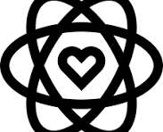

¿Quiénes Somos?
Somos una institución educativa de inspiración cristiana que forma personas íntegras, críticas y creativas, comprometidas con la transformación de la sociedad.

Misión
Formar integralmente a niños y jóvenes como líderes del mañana, brindando una educación académica de excelencia arraigada en valores éticos y cristianos. Potenciamos sus habilidades cognitivas, socioemocionales y sociales en un entorno seguro e inclusivo, preparándolos para transformar positivamente su sociedad.
Visión
Ser reconocidos como una institución líder en educación integral y formación en valores.

Nuestra Historia
Fundado en 1985 por el profesor Arturo Santamaría, nuestro colegio nació en Tunja con el firme propósito de ser un espacio donde la excelencia académica y la formación en valores cristianos caminaran de la mano. Lo que comenzó como una pequeña escuela con solo tres salones ha evolucionado, a lo largo de más de cuatro décadas, hasta convertirse en un referente educativo en la región, caracterizado por su compromiso con la formación de líderes íntegros, críticos y solidarios. Hoy, con orgullo y visión de futuro, seguimos honrando nuestra tradición mientras integramos tecnología e innovación, consolidando una gran familia dedicada a transformar la sociedad desde la educación.